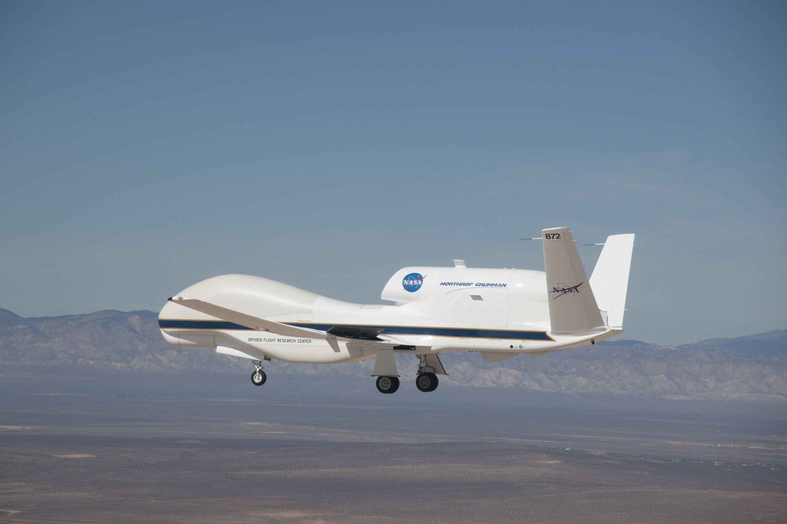
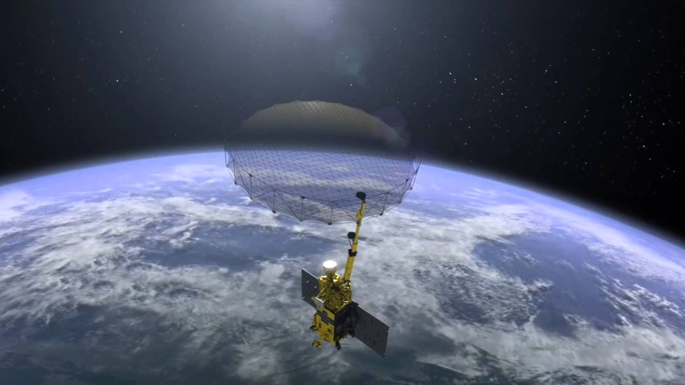
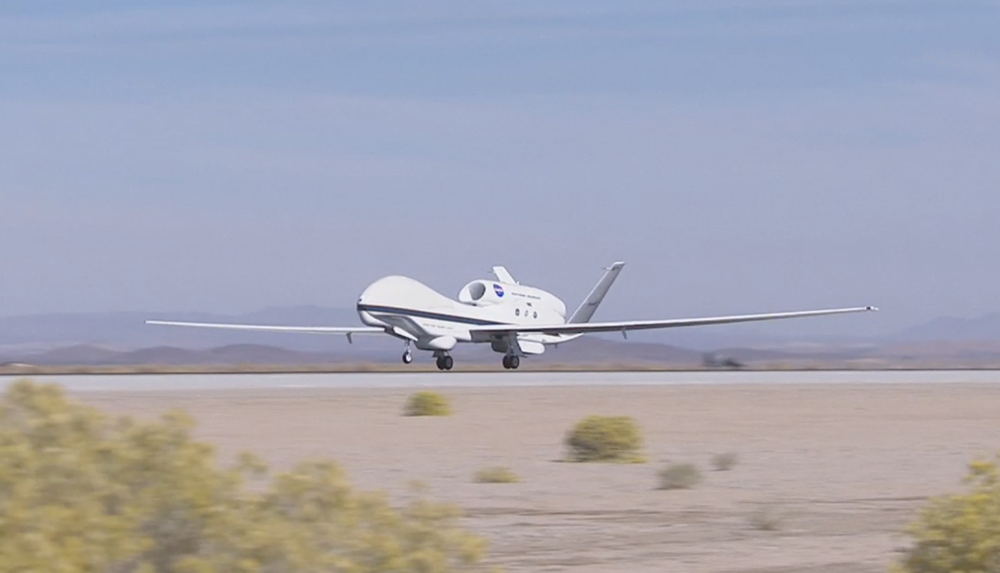
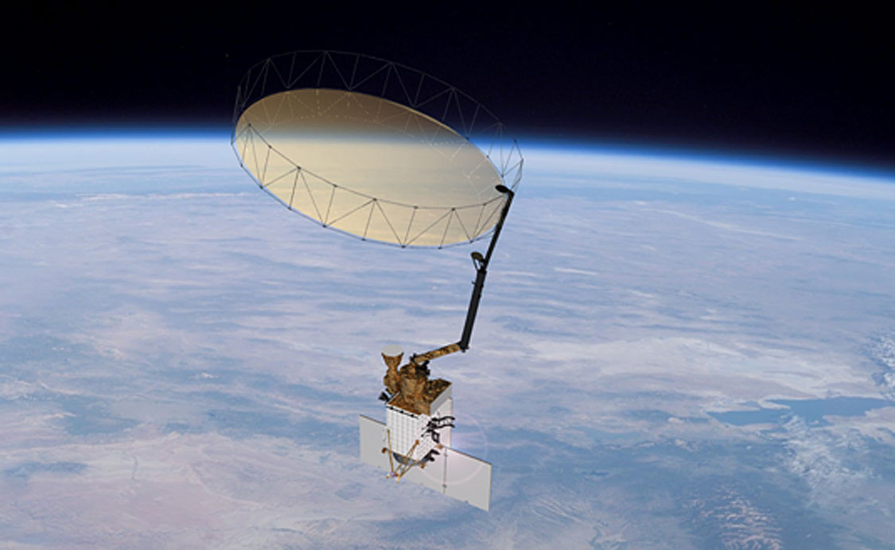
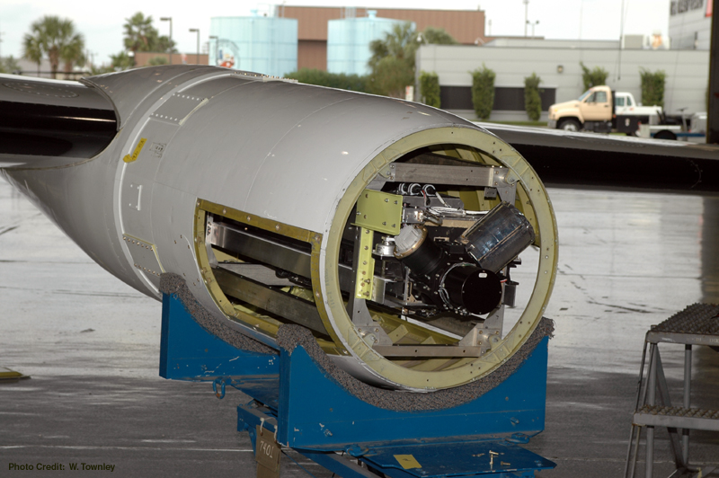
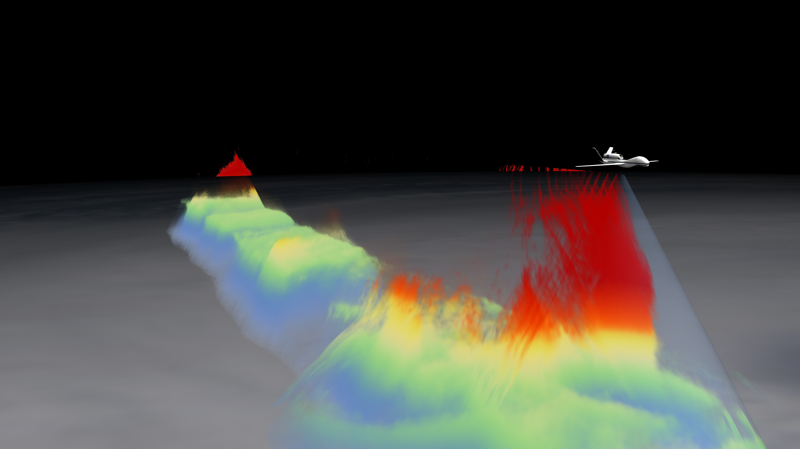
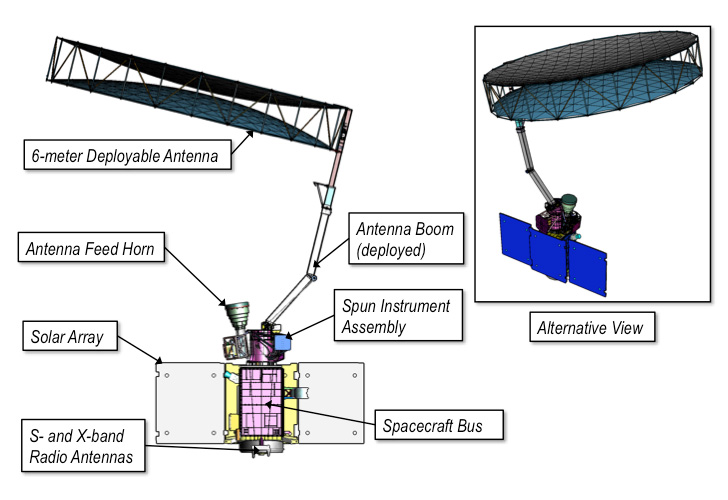
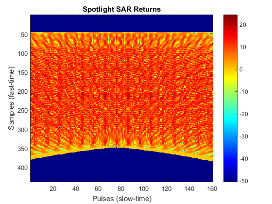

|
The Atmosphere Moisture and Storm Mapping Program provides valuable data regarding the relationship between atmosphere and weather phenomenon. |
 |
|  |
The Atmosphere Moisture and Storm Mapping Program, also known as AMSMP, is a 3-year program that finds the relationship between the atmosphere and certain weather events. As both a space-based and Earth-observation program, AMSMP utilizes numerous instruments that can provide accurate and important data for scientists, including:
|
AMSMP utilizes numerous instruments to perform optimal data collection to fulfill its objective. From sensors to cameras, all equipment present on the SMSMP are of great importance. The types of technology, however, vary from the two missions of SMSMP.
The AMSMP consists of two major missions: an Earth-based mission called Atmosphere Moisture Program and a space-based Earth-observation mission called Storm Mapping Program. |
|

Atmosphere Moisture Program (AMP) |

Storm Mapping Program (SMP) |
Atmosphere Moisture Program (AMP) is an Earth-based mission that utilizes two Global Hawks to collect data. A Global Hawk is an unarmed surveillance aircraft generally used for surveying large amounts of land in a single flight. Let's take a look at some of the instruments used by these aircrafts. |
A Short Clip on the Global Hawk |

The Scanning High-Resolution Interferometer Sounder (S-HIS) |
The Scanning High-Resolution Interferometer Sounder (S-HIS) is a sensor system that emits thermal radiation to obtain data regarding the Earth's atmosphere, such as the temperature and water vapor. The S-HIS functions the best when at an altitude of 20 to 40 kilometers, heights the Global Hawks typically collect data at. The S-HIS works exceptionally well with these aircrafts. |
|
The Cloud Physics Lidar (CPL) is a modeling system that discriminates differnet particles in the atmosphere by emitting pulses of light. The CPL allows for creations of accurate modeling designs regarding the composition of the atmosphere. It is known for its efficiency in taking measurements and ability to aid other instruments. It is also designed for large surveillance aircrafts, such as Global Hawks. |
A short video about one of the many uses of the Cloud Physics Lidar |

The HIWRAP in Action on a Global Hawk |
The HIWRAP is a navigation system that measures the frequencies of emitted beams to determine the location of upcoming storms or hurricanes. The HIWRAP ensures the safety of both Global Hawks during data collection. |
The Storm Mapping Program, also known as SMP, is a space-based Earth observation mission that monitors the data collected by the Global Hawk and provides a wide variety of applications. For instance, it can efficiently map data regarding climate changes as well as use additional sensors to provide information regarding water, carbon, and energy cycles. It can also collect further data on its own, using the following instruments. |
A Short Clip on a New Earth-Orbiting Satellite called Soil Moisture Active Passive (SMAP) |

Several Instruments Displayed on the SMP |
The L-Band Radar and the L-Band Radiometer are sensor systems that measure moisture content of the surrounding atmosphere within a desired region. The two radars are highly valued due to their multiple uses. For instance, they can also measure water content in vegetation through multiple polarizations. The instruments use magnetic fields and other environmental factors to increase the accuracy of the data collection. The L-Band Radars/Radiometers are highly favored over others because they work far more efficiently with data processors and other instruments compared to other forms of technology. |
|
Many radars on the satellite use Synthetic Aperture Radar (SAR) Processing are modeling systems that increase the accuracy of the collected data. The SAR Processing works by increasing the resolution of images taken by the satellite to produce more realistic, synthesized data. SAR Processing can be incorporated into thermal management systems due to the sensors they use to determine heat signatures, explaining their importance and necessity in the SMAP. Multiple thermal instruments require the processes SAR provides. |

Unprocessed Data Mapped with the use of SAR Processing |
The technologists are responsible for the internal/software and physical parts of the instruments necessary to carry out data collection. They must collaborate with the engineers to understand how the instruments should be shaped or programmed to fit in properly with the necessary aircrafts or satellites. The engineers in turn should require the technologists to provide them with the specifics of the instruments in order to design the aircrafts/satellites as efficiently as possible based on the needs of the instruments.
Technologists must ensure the instruments used in the AMSMP are up-to-date and function as desired. For instance, they must make sure the AMP uses Global Hawks that use proper equipment that are functional. In addition to maintaining the quality of the instruments, other jobs include modifying them to increase or improve functions and investing or researching better forms of radars or sensors.
The trade workers ensure the aircrafts are properly managed and not damaged during flights. Also, they ensure the satellite is always under the control of the AMSMP station. They should communicate with the technologists to find the ideal time to perform these actions. The technologists in turn must make sure the trade workers know about quality or status of the instruments so they do not get damaged during the process.
Comment:
Comment:
Comment:
Comment:
Comment: